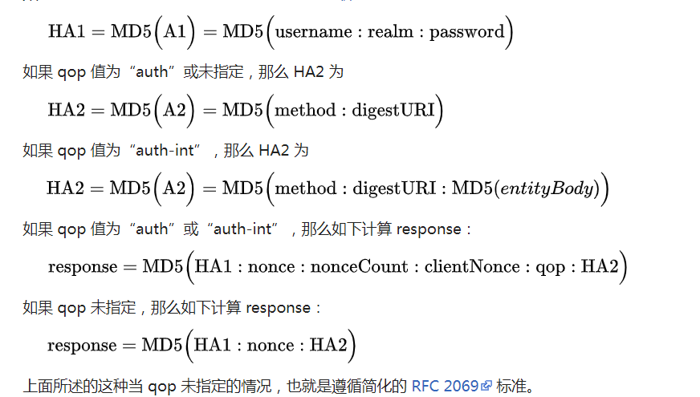

0x01 简介
Http digest被称作摘要访问认证，它是一种服务器同浏览器进行消息认证方法。它在密码发出前先对其应用hash函数，这相对于http basic认证发送明文而言更加安全。从技术上来说，digest摘要认证是使用随机数来阻止密码分析的MD5哈希函数应用，也是基于http协议的。
这边贴下wiki: HTTP摘要认证
0x02 digest出现的原因
digest出现以前http服务的消息认证是基于basic的，但是随着时间的流逝，basic认证变的越来越不安全，它暴露出很多缺陷
明文传输
basic认证对消息字段进行base64加密传输，然鹅base64是可逆的，一旦被中间人攻击截取消息，重要数据就泄露了，相当于是明文传输消息。
重放攻击
就算其字段是经过加密传输，同样逃不过arp，一旦数据包被截获，攻击者可以通过重放数据包给服务器获取访问权，早期的basic只有用户名密码字段，并没有时间戳验证之类的，所以很容易被攻击。
不支持对称认证
basic服务不支持证书认证，客户端不能确定唯一服务器，攻击者可以伪造成服务器给客户端下指令。
ETC
basic认证还有很多缺陷，它只能用在一些简单的场景，大型项目是不能很好支持的。
basic被证明不安全后，digest应运而生。
digest的优点如下
摘要传输
用户名密码等字段是hash以后再进行传输的，由于hash不可逆，攻击者无法直接得到用户的认证信息。
随机数认证
每次认证，服务器会生成一个随机数发送给客户端，客户端给服务器发送认证信息时会带上此参数，一旦服务器检测到客户端传递的nonce随机数和其保存的不一致，则判定为重放，服务器会返回401未认证的消息给客户端，这样就能有效防止重放。
nonceCount认证
这个参数能够对通信次数进行标记并与服务端保存的此参数进行对比，一旦不一致，服务器返回401未认证消息。
digest弥补了basic一些安全缺陷，所以之后的一段时间内都是用digest代替basic。
0x03 功能&实现
digest认证有几个重要参数如下
realm
server端域名
nonce
服务器随机产生的字符串，是时间+密语的md5，由于加入了时间标识，所以它是有时效性的。
qop
用来说明服务器/客户端用哪种方式来进行加密/解密
nonceCount(nc)
标记客户端的请求次数，服务器端也会进行记录来防止重放
uri
记录下客户端访问的url
digest请求过程如下:
首先，客户端发送一个请求给服务端，服务端生成nonce字符串，realm等参数值，并返回给客户端一个401未认证的状态包，web上出现弹框，显示要求用户输入用户名和口令。客户端收到返回的包后将username、realm、password按照username:realm:password的方式进行hash后保存为HA1，再将请求方法method和请求url进行hash保存为HA2，之后HA1和HA2根据qop标识的认证方式和其它重要参数进行hash后的值保存为response再发请求给服务端。

服务端收到请求后先验证nonce是否过期，过期的话直接反回401未认证，之后比较nc值，若不是nc+1则说明进行了重放，则返回401状态，如果之前验证都通过了，则比较最终的hash是否一致，若一致，说明用户名密码等关键信息没有问题，服务端返回200。
0x04 攻击面
Digest虽然有自己的标准，但是却不是一个固定的算法，它是需要用户去自定义自实现的，正是这一点导致了很多应用digest机制却没能安全实现算法的厂商产品有致命漏洞。
如果qop未指定，则ha1固定(HA1=MD5(A1)=MD5(username:realm:password))，且HA2固定(HA2=MD5(A2)=MD5(method:digestURI))，而response=MD5(HA1:nonce:HA2)，这边非常容易被中间人。
很多开发者只存储HA1，而不去验证HA2，仅通过HA1中用户名、安全域、密码的hash值去校验用户登录信息是否正确，安全性底下。
0x05 替代方案
Digest相对basic是进步的，但是安全度仍然不高，建议使用https进行认证，提高安全性。
0x06 案例
某著名IOT厂商设备存在此漏洞，开发者在实现digest认证时没有对HA2进行校验，导致可以在30s内(nonce未过期时间内)通过重放攻击修改URI进行任意API调用，相当于命令执行了。目前已提交CNVD，最新版本已修复。